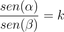

Trigonometria e Raios Luminosos

Encontrando a Lei de Snell
O próximo passo para compreender o fenômeno da refração de um raio de luz será calcular o valor de k, da relação encontrada anteriormente:

Note que o valor que você obteve na questão anterior é igual ou muito próximo a 1,33.... Esse é o valor esperado para k no caso da refração de um raio luminoso ao passar do ar para a água. Pequenas diferenças podem ocorrer devido à precisão das medições realizadas.
Nas questões a seguir, considere k=1,33.
Note que, para a refração aqui analisada, em que o raio de luz passa do ar para a água, o ângulo de saída é sempre maior do que o ângulo de entrada.
O que aconteceria se tal processo fosse invertido, ou seja, se fosse analisada a trajetória do raio passando da água para o ar?
Corrigir todas as questões Continuar